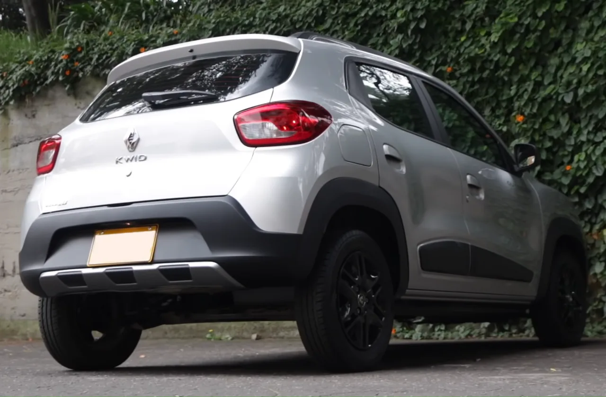
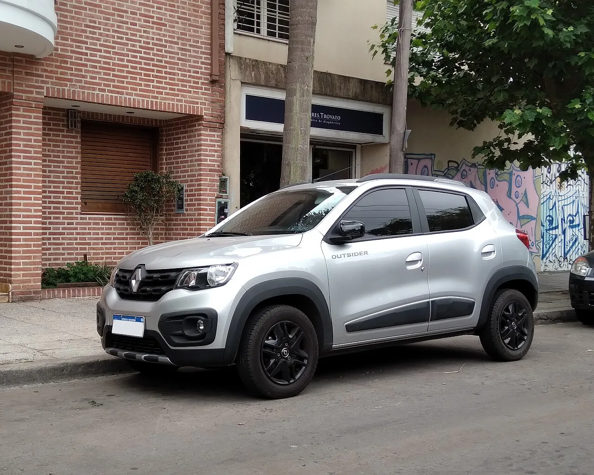

▲ 르노 콰이드 아웃사이더. 같은 모델이 인도와 브라질에서 3배 넘게 다른 값에 팔린다 ⓒ Wikimedia Commons
1. 두 개의 가격표
르노 콰이드는 인도와 브라질에서 모두 팔립니다. 그런데 시작 가격이 이렇게 갈립니다.
| 시장 | 현지 가격 | 달러 환산 |
|---|---|---|
| 인도 | 45만 3,000루피 | 약 4,700달러 |
| 브라질 | 8만 2,790헤알 | 약 1만 6,000달러 |
원화로 환산하면 대략 660만 원과 2,240만 원입니다. 3배가 넘는 차이입니다.
같은 이름, 같은 형태의 차입니다. 트림 구성과 일부 장비에는 차이가 있지만, 차 자체가 다른 모델은 아닙니다.
2. 엔진은 똑같다
두 시장 모두 1.0리터 자연흡기 3기통을 씁니다. 출력은 연료에 따라 갈립니다.
가솔린으로는 68마력(51kW/69PS), 에탄올로는 71마력(53kW/72PS)입니다. 브라질은 사탕수수 에탄올 연료가 보편화된 시장이라 플렉스 연료 사양이 기본입니다.
변속기는 5단 수동뿐입니다. 자동변속기 선택지가 없습니다. 이 구성만 놓고 보면 두 시장의 차는 기계적으로 사실상 동일합니다.

▲ 콰이드 후면. 두 시장의 차는 형태와 기계 구성이 사실상 같다 ⓒ Wikimedia Commons
3. 장비는 브라질 쪽이 낫다, 다만
브라질 부분변경 모델은 10.1인치 터치스크린과 7인치 디지털 계기판을 얹었습니다. 르노의 최신 스티어링 휠 엠블럼도 중상위 트림에 적용됐습니다.
그런데 기본 에볼루션 트림은 다릅니다. 화면이 들어갈 자리에 플라스틱 커버가 들어갑니다. 즉 1만 6,000달러라는 시작 가격은 화면이 없는 차의 값입니다.
인도 쪽은 올해 초 더 가벼운 수준의 개선을 받았습니다. 대대적인 화면 업그레이드는 포함되지 않았습니다.
여기서 확인되는 것이 있습니다. 장비 차이는 분명 존재하지만, 그 차이가 1만 1,300달러라는 격차를 설명하지는 못합니다. 10.1인치 화면 하나가 그만큼의 값을 갖지는 않습니다.
4. 그렇다면 무엇이 값을 만들었나
Carscoops가 지목한 첫 번째 요인은 생산지입니다. 인도 물량은 첸나이에서, 브라질 물량은 아이르통 세나 콤플렉스에서 만듭니다.
인도는 자동차 부품 생태계가 촘촘하고 인건비가 낮습니다. 소형차를 대량으로 만들어 온 역사도 깁니다. 같은 차를 만들어도 원가가 다르게 나옵니다.
두 번째는 세금입니다. 브라질은 자동차에 붙는 세금 부담이 높은 시장으로 알려져 있습니다. 소비자가 내는 가격 가운데 세금이 차지하는 비중이 크면, 제조 원가가 같아도 최종 가격은 크게 벌어집니다.
세 번째는 시장 내 위치입니다. 인도에서 콰이드는 입문용 소형차입니다. 브라질에서는 같은 차가 시장 구조상 조금 더 위쪽에 놓입니다. 같은 제품을 시장마다 다른 위치에 두는 것은 제조사의 일반적인 전략입니다.

▲ 콰이드는 신흥 시장 전용으로 설계된 소형 해치백이다 ⓒ Wikimedia Commons
5. 한국에서 이 사례를 볼 이유
첫째, 해외 가격을 국내 가격과 직접 비교하는 것이 왜 위험한지 보여 줍니다. "이 차가 미국에서는 얼마인데 한국에서는 얼마"라는 비교는 흔합니다. 콰이드의 사례는 같은 차라도 세금, 생산지, 사양, 시장 위치에 따라 3배까지 벌어질 수 있음을 보여 줍니다.
둘째, 시작 가격의 함정입니다. 브라질 기본 트림은 화면 자리에 플라스틱을 넣었습니다. 국내에서도 광고에 표기되는 시작 가격은 대개 최하위 트림입니다. 실제 구매 트림과의 차이를 확인해야 합니다.
셋째, 중국·인도발 저가 모델의 국내 진입을 볼 때의 기준입니다. 본국 가격이 낮다고 국내 가격이 그대로 낮아지지는 않습니다. 관세, 인증, 유통, 서비스망 구축 비용이 모두 얹힙니다.
6. 정리

▲ 참고 — 르노는 시장별로 완전히 다른 소형차를 운영한다. 사진은 유럽용 트윙고 E-테크의 실내로, 같은 급이라도 시장에 따라 장비 수준이 크게 갈린다 ⓒ Wikimedia Commons
콰이드의 두 가격표가 알려 주는 것은 단순합니다. 자동차 가격에서 차 자체가 차지하는 몫은 생각보다 작다는 것입니다. 같은 엔진, 같은 변속기, 같은 차체가 어디서 만들어졌고 어느 시장에서 팔리느냐에 따라 값이 세 배로 갈립니다.
그래서 가격을 볼 때 물어야 할 질문도 달라집니다. "이 차가 왜 이렇게 비싼가"가 아니라 "이 값에서 차가 아닌 부분은 얼마인가"입니다.